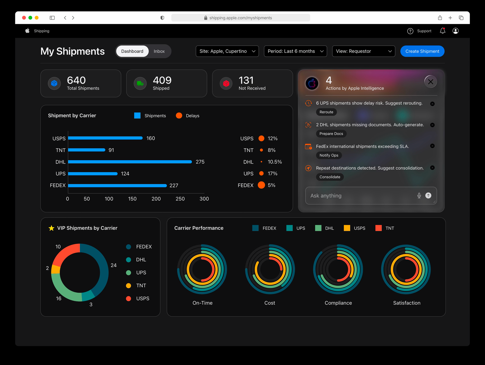
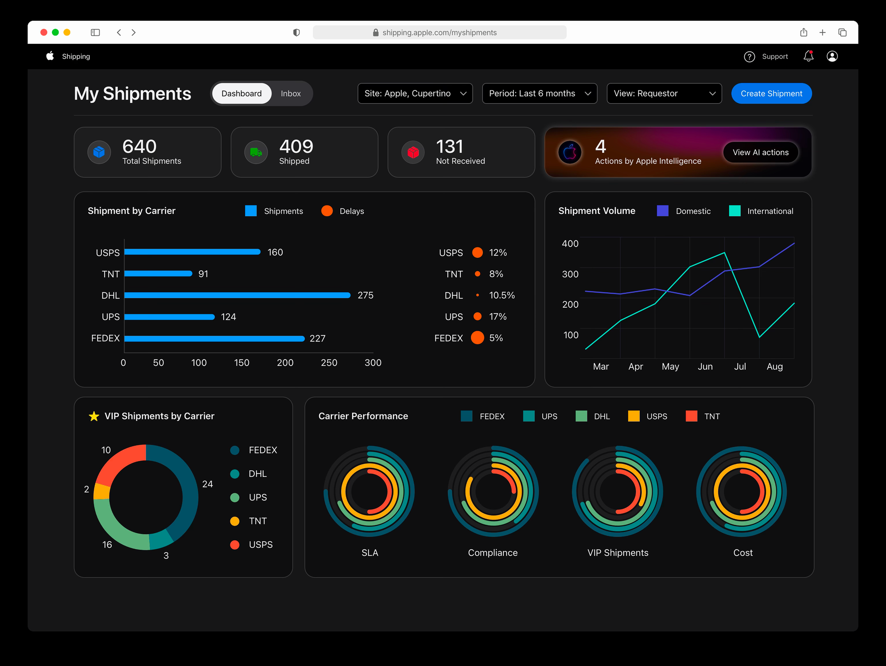
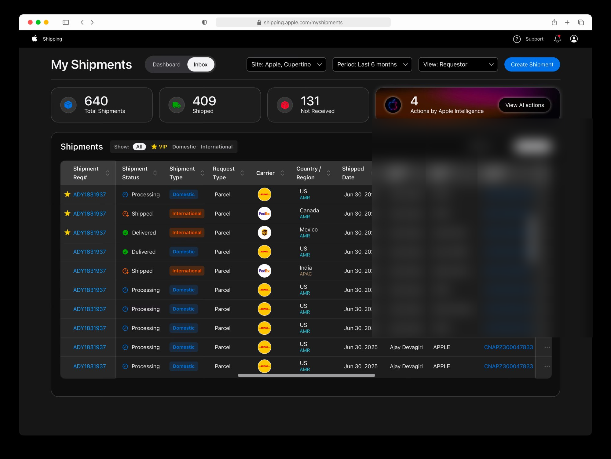
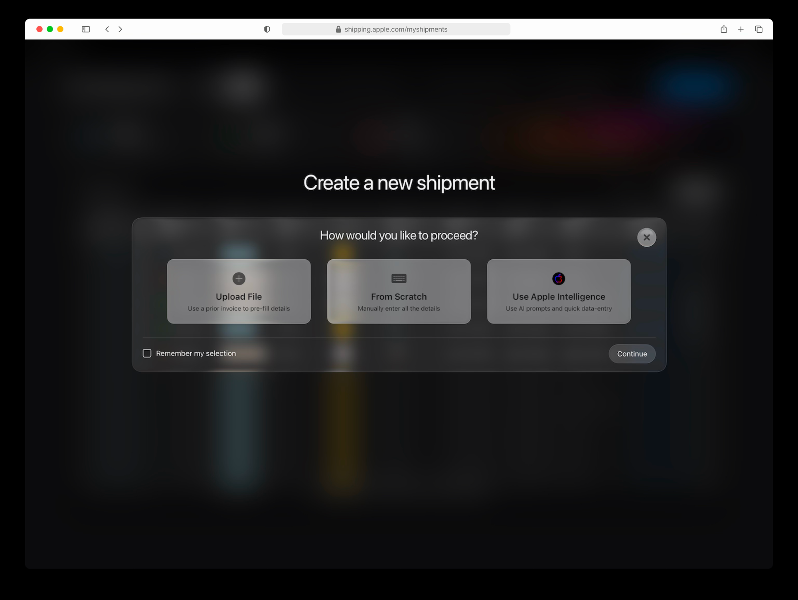
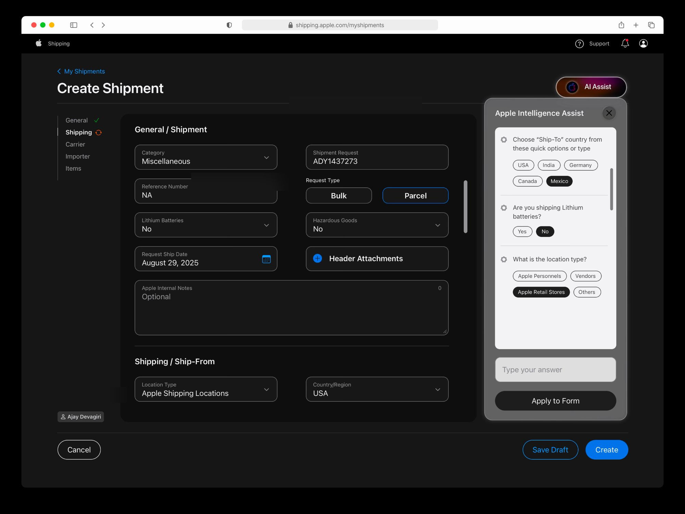

Apple's logistics managers ran shipping by hand, and the plan was to automate it away. I designed the AI to do the work and show its reasoning, so the manager stays the one who decides.
A note. Apple's internal tool and its data stay private. The screens here are approved, representative views of my redesign with mock data, and I am glad to walk through more in depth privately.
Apple's logistics managers created and tracked every shipment through a fragmented, manual workflow. No proactive alerts, no consolidation, no assistance. Just volume and complexity, held together by people cross-referencing one tab against another.
The obvious fix was speed. But the question underneath was harder, and it was the one everyone was about to skip past.
The problem was not speed. It was trust.
On a leadership call, the team pitched an AI agent that would run the whole workflow: reroute delayed shipments, auto-generate the missing forms, consolidate on its own. Everyone was thrilled. I was the only designer in the room, and I asked one question. Would a manager sign an auto-generated form without reading every line? Would they hand over a decision they could not undo?
That reframed the whole project. This was not an efficiency problem; it was a trust problem. An AI that acts silently in a high-stakes operation does not save time. It spends trust, and the first surprise action costs more than every second it ever saved. So we changed the goal. The AI does the work and shows its reasoning, and the manager keeps the call.
A silent action does not save time. It spends trust.
Every AI move surfaces as a named action, not a silent automation. The manager sees what the system caught, why it matters, and stays one tap from accept, change, or dismiss. Nothing happens to a shipment without a person saying yes.
The heart of the redesign is the AI action surface. The system watches for delay risk, missing documents, SLA breaches, and repeat destinations, and surfaces each as a proposal the manager can accept, modify, or dismiss in one tap. Reroute. Prepare docs. Notify ops. Consolidate. The work is done for them; the judgment stays with them.

The AI action surface. Each proposal names what it caught, why it matters, and the single action that resolves it. Reroute a delay, prepare missing docs, notify ops on an SLA breach, consolidate repeat destinations.

The dashboard. Carrier performance, volume, and SLA risk, ambient instead of cross-referenced by hand.

The inbox. A dense, filterable view with VIP flags and status you read at a glance.

The choice, up front. Pick a mode before the form, so each path stays clean.

The conversational path. Apple Intelligence Assist fills the form by asking, then hands the result back for review.
Shipment creation dropped by half, with four kinds of proactive help surfaced in real time, and I took it from brief to Apple-standard React in under two weeks. Not by automating the manager out of the decision, but by doing the work in front of them and leaving the call where it belongs.
Next case Design Systems & AI·A design system in code